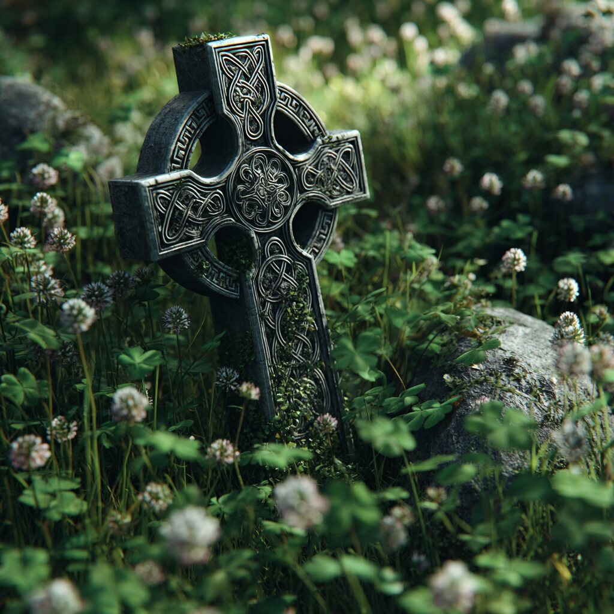
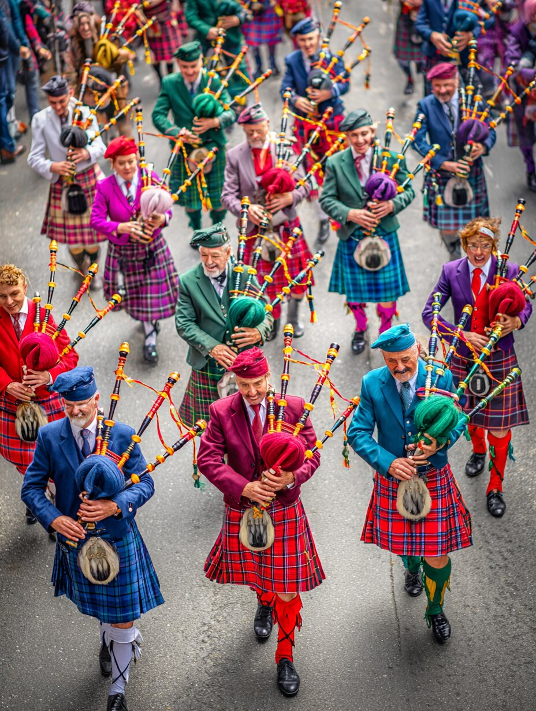
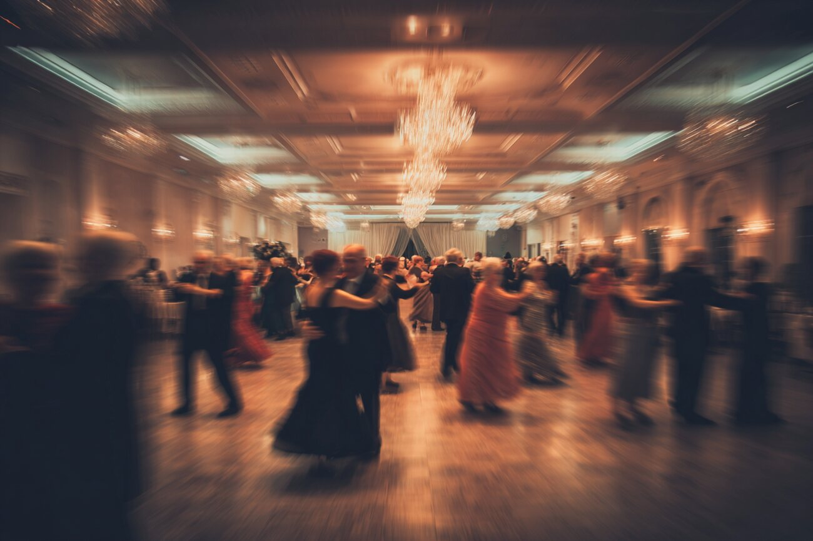
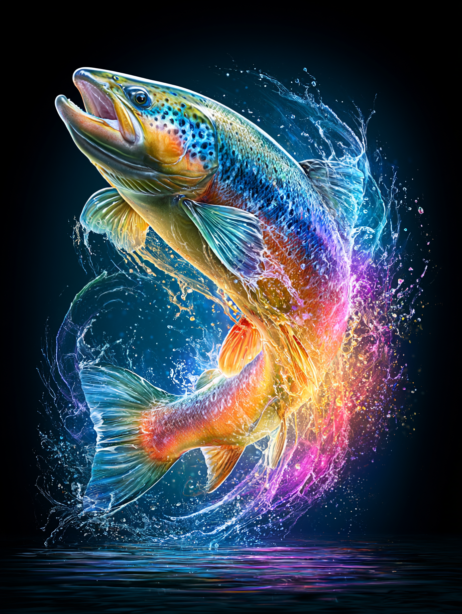
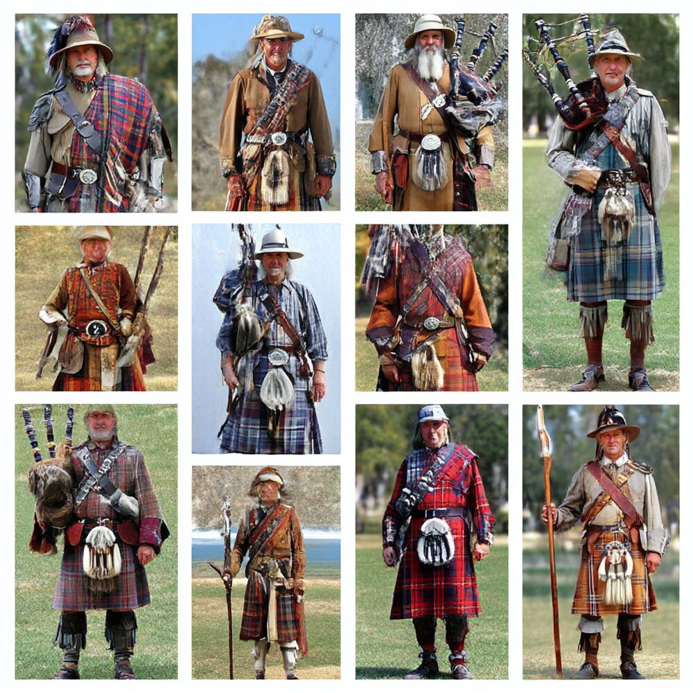
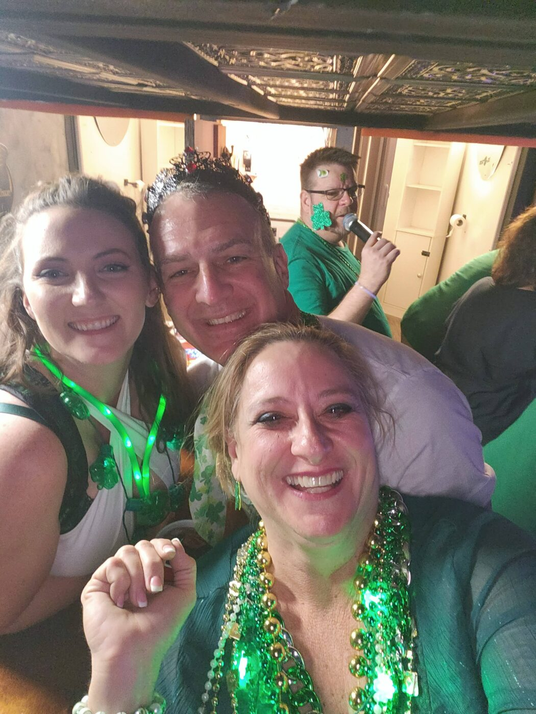

Stories, symbols & traditions
Learn
Irish heritage, Celtic art, and the meaning behind it all.
The Irish Kilt
A guide to Gaelic heritage & style
Irish kilts often favour the saffron and solid colours, county-based tartans, and the Brian Boru jacket —
a Gaelic cousin to the Scottish Highland tradition.
From the Archive
A little learning over a cup of tea
Celtic Symbols
The Triquetra — Knot of Three
Irish heritage

The triquetra, or trinity knot, is among the oldest and best-loved of Celtic symbols.
Drawn as a single unbroken line, it has no beginning and no end — a fitting emblem for
eternity, unity, and the bonds of community that the early Irish prized above all.
You'll find it carved on standing stones, illuminated in the Book of Kells, and worked
into jewellery to this day. We carry it as our quiet reminder that a krewe, like the knot,
is stronger for being woven together.
Heritage
High Crosses & the Fields of Clover
Irish heritage

The great stone high crosses of Ireland — ringed where the cross-arms meet — once stood as
gathering points and teaching tools, their panels telling stories to all who passed.
Set among the clover, they marry the sacred and the everyday in a way that feels deeply Irish.
And the clover itself? Saint Patrick, so the tradition goes, plucked a humble shamrock to
explain the Trinity — three leaves on a single stem — and the little plant has been ours ever since.
Legends
Daughters & Warriors of Éireann
Irish legend

Long before the parades, the women of the Celtic world were warriors, queens, and
keepers of the law. Queen Medb of Connacht led armies into the great cattle raid of the Táin;
the war-goddess The Morrígan wheeled over the battlefield as a crow; and on the Isle of Skye,
the warrior-woman Scáthach trained the greatest heroes of the age.
It's a heritage worth remembering: in the Krewe of Shamrock, the women march, pipe, and lead
right alongside the men — daughters of Éireann, every one.
Music & Dance
Pipes, Drums & the Session
Irish & Scottish tradition

There is no mistaking the first skirl of the pipes. Whether it's the Great Highland
bagpipe of the Scottish tradition or the gentler Irish uilleann pipes — bellows-blown and played
sitting down — the sound carries centuries in it. Add the heartbeat of the bodhrán, the goatskin
frame drum struck with a little wooden tipper, and you have the engine of any good krewe.
Gather a few players in a corner of a pub and you have a "session" — tunes traded by ear, jigs and
reels rolling one into the next, no sheet music in sight. And when the fiddle strikes up, the
céilí dancing begins: lines and circles and the whirl of a good time shared. It's participation,
not performance — exactly the spirit we march in.
Music & Dance
Dancing Irish Women
Steps through time

From the curled hair and embroidered dresses to the fancy footwork, women's Irish dance
carries centuries of heritage in every step. The costumes themselves tell the story — born of the late-19th
century Celtic Revival, when a full-length léine, woven crios belt, and flowing brat
cape became a proud emblem of Irish identity, and Celtic knotwork from the Book of Kells first
found its way onto the dancers' dresses.
Over the decades those costumes have evolved from school uniforms into dazzling, crystal-covered solo
dresses — a tradition kept alive by generations of women who march, pipe, and dance right alongside the men.
The Smithsonian's Center for Folklife & Cultural Heritage tells the full story beautifully.
Read the Smithsonian article ☘
Gaelic & Blessings
Sláinte! A Few Words of Irish
As Gaeilge — in the Irish language

A few words of Irish go a long way. Raise a glass and you'll hear Sláinte
(SLAWN-cha) — "health!" Our own welcome, Céad Míle Fáilte (kayd MEE-luh felt-cha), means
"a hundred thousand welcomes," and we mean every one of them.
The old blessings are the loveliest of all: "May the road rise up to meet you, may the wind be
always at your back." And when someone sneezes, you might hear Dia linn — "God be with us."
You needn't be fluent; a single warm word, well meant, is pure Irish.
Festivals
The Wheel of the Year
Seasons & celebrations

The Celtic calendar turns on four great fire-festivals. Imbolc in February greets
the first stirrings of spring and Saint Brigid. Bealtaine in May lights the summer fires.
Lúnasa in August gives thanks for the harvest. And Samhain at the end of October —
when the veil between worlds grows thin — is the ancient root of our modern Halloween.
Of course, the day we hold dearest is the 17th of March. Saint Patrick's Day began as a quiet feast
and grew into the world's great celebration of all things Irish — and in Tampa Bay, there's no
finer place to wear your green than marching with the Krewe.
Legends & Myth
Finn McCool & the Giant's Causeway
A tale of Éireann

They say the giant Fionn mac Cumhaill — Finn McCool — built a causeway of stone columns
across the sea to face a Scottish rival. When he saw the size of the other giant, clever Finn's wife
disguised him as a baby in a cradle. The Scot took one look at the "child," reckoned the father must be
enormous, and fled home, tearing up the causeway behind him.
The basalt columns of the Giant's Causeway still stand on the Antrim coast to this day. It's a tale that
captures the Irish gift entirely: when in doubt, out-wit, not out-fight — and tell a grand story about
it after.
Legends & Myth
The Salmon of Knowledge
A tale of Éireann

There is a fish that swam in the Well of Segais, at the source of the River Boyne,
and whoever tasted its flesh would gain all the wisdom in the world. The salmon had fed on hazelnuts
fallen from the nine sacred trees that ringed the well — and in each nut was the knowledge of the ages.
The poet Finnegas spent seven long years fishing that river, waiting for his chance. When at last he
caught the salmon, he set his young apprentice — a boy named Fionn mac Cumhaill — to cook it, but warned
him firmly: do not taste a single bite. As Fionn turned the fish over the fire, a blister of hot skin
burst and burned his thumb. Without thinking, he pressed it to his mouth to ease the sting — and in that
instant, all the wisdom of the world passed into him.
From that day forward, whenever Fionn needed guidance, he had only to press his thumb to his teeth and
the knowledge would come. The great hero who would go on to lead the Fianna — Ireland's legendary warrior
band — was made not by a sword stroke, but by an accidental taste of something wonderful.
Heritage & Style
Kilt Myths & Legends
Sorting fact from folklore

Few garments carry as many tall tales as the kilt. Did the Irish bring it to Scotland?
Did tartan begin in the Highlands? Does the number of colours mark the wearer's rank, or hide a secret
Ogham message woven into the cloth? The truth is often older — and stranger — than the legend.
The kilt-makers at Keltoi Gaelic Clothing have gathered the best-loved myths about kilts, tartan, and
Highland wear and weighed each one against the historical record — from the Gaels of Dál Riata in their
saffron léine and brat to the clan tartans devised in the weavers' sample books of the
1700s. A grand read for anyone proud of their Gaelic threads.
Read the myths & legends ☘
From the Blogs
Did the Irish Invent the Kilt?
From the Celtic Fire blog
Around 432 AD, in the days of Saint Patrick, what did the Irish actually wear? Author
Erin O'Quinn paints the picture from old manuscripts, Roman accounts, Ireland's earliest legends, and
garments pulled from the preserving depths of the bog — the linen léine belted at the waist, the
woollen brat cloak, leather bróga, and the bright, status-marking colours a person was
allowed to wear.
And the big question her headline asks: did the Irish Gaels, pushing into Scotland in the fifth century,
hand the skirt-like léine to the Scots — or borrow it from the roaming Scoti? It's a debate that
has "raged for over a hundred years," and her warm, witty post is a lovely corner of a blog full of
all things Irish.
Read the blog post ☘
Good News & Good Craic
A few warm tales from our corner of Tampa Bay
Krewe Life
The Morning the Pipes Start
Parade day

There's a particular kind of magic to parade morning. The kilts come out of their garment
bags, the beads get untangled, and somebody's always missing a sporran. Then the pipes start to tune —
that first wheezy drone — and a hundred neighbours suddenly become one krewe.
By the time we step onto the route, the nerves are gone and the grins are out. Strangers on the curb wave
their little flags, children dash for beads, and for a few green-and-gold hours, all of Tampa Bay feels
like family. That feeling is exactly why we do it.
Krewe Life
The Family You Choose
Our welcome

Ask almost anyone in the Krewe what kept them, and they won't say the parades or the
party — they'll say the people. Folks arrive knowing one member, or none, and within a season they've got
a whole table of friends saving them a seat. Irish or not, kilted or not, everyone's welcome.
"All for Fun, Fun for All" isn't just our motto — it's how a stranger at their first meeting becomes the
one tuning the pipes a few years on. New faces, as we like to say, are simply old friends we haven't met yet.
Giving Back
More Than a Good Time
Service & charity

For all the craic, the Krewe has always believed a good time should do some good. Over the
years our members have given thousands of dollars and countless hours to Tampa Bay — unloading donation
trucks, supporting children fighting illness, and lending a hand wherever it's needed.
It's quiet work, mostly, far from the parade route. But it's the truest part of who we are. If you'd like to
roll up your sleeves with us, our Service & Charity page is the place to start.